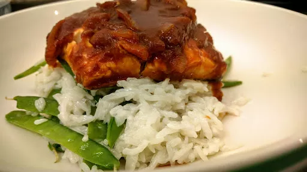

Sweet and sour fish with coconut rice and mangetout
30 mins
Serves 2

Ingredients
2pieces of cod or haddock
1mug rice
1x 400 g tin coconut milk
12
pieces of mangetout, sliced lengthways
Sauce
3tbsp tomato puree
1heaped tbsp honey
4tbsp white wine vinegar
2tbsp soy sauce
1tbsp freshly grated ginger
1
onion, chopped
a little oil to fry
Instructions
Preheat the oven to 190°C(fan)/210°C/Gas 6.
To make the sauce, fry the onion and ginger in the oil until the onion begins to soften. Add the rest of the sauce ingredients and bring to the boil. Take off the heat. The mixture should be quite thick.
Place the fish in a greased casserole dish and spread the sauce over the top. Bake in the oven for 15-20 minutes
, depending on the thickness of the fish. If the fish is 1" thick, cook for 15 minutes
, if it is 1.5" thick for 20 minutes
.
While the fish is in the oven, cook the rice. Use the coconut milk and make it up to 2 mugs worth of liquid by adding water. Bring to the boil in a saucepan, then add the rice. Stir once and bring back to the boil. Turn down to simmer and put a lid on the pan. 3 minutes
before the end of the cooking time, add the sliced mangetout on top and replace the lid. Once cooked, stir together.